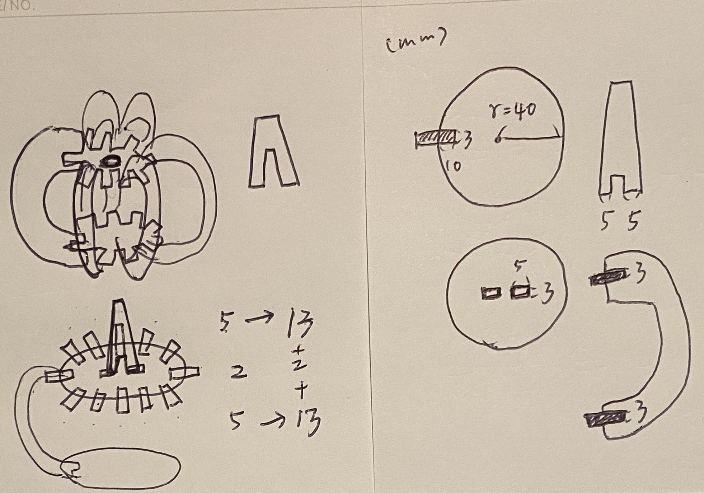

Photo by Matt Eberle on Unsplash
Oct. 11 Process note: Due to the breakdown of the laser cutters at the school makerspaces and conflicts to my personal schedule, I am yet to go try out the laser cutting machine for the parts I drew. Hopefully I can get to this part soon!
Pumpkin!
It's October and Halloween is around the corner, so why not make a pumpkin!
I started with some concept sketches, thinking about how to fit the parts together in my head. The idea is to have a circle plane for both top and bottom, and then fit 28 pieces of "pumpkin skins (rinds)" around them. Finally, put a stem on the top. If all goes well, I can even put a small light in the middle of it to light the pumpkin up!
Modeling in Rhino
Using commands such as Trim, Join, ArrayPolar, Rectangle in Rhino, I was able to draw the parts of the pumpkins.
The unit is set in mm in Rhino, therefore conversion to inch will be needed as the laser cutters of the school makerspaces are inch-based.
 All the parts of the pumpkin I created in Rhino 7
All the parts of the pumpkin I created in Rhino 7
Now, the main concern would be if the parts can fit nicely together. Also, with 28 slots needed to be cut out on both the top and bottom circle planes, and with the slots being pretty close to each other, I worry that it is possible for the top/bottom planes to break.
I'll need to test it out with the laser cutters to see if these work!
The Rhino source file can be found here.
Laser Cutting!
TBD
Acknowledgements
Thank you to the TA for the helpful comments and the demo video in the Discord channel, they help a lot! Also many thanks to the peers who ask questions in the channel!